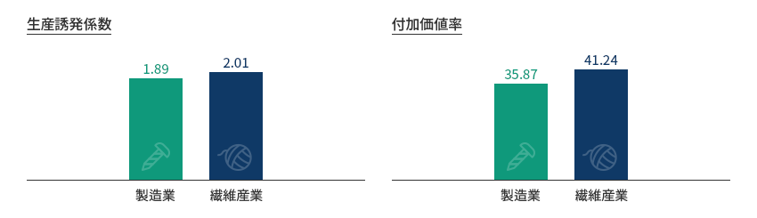
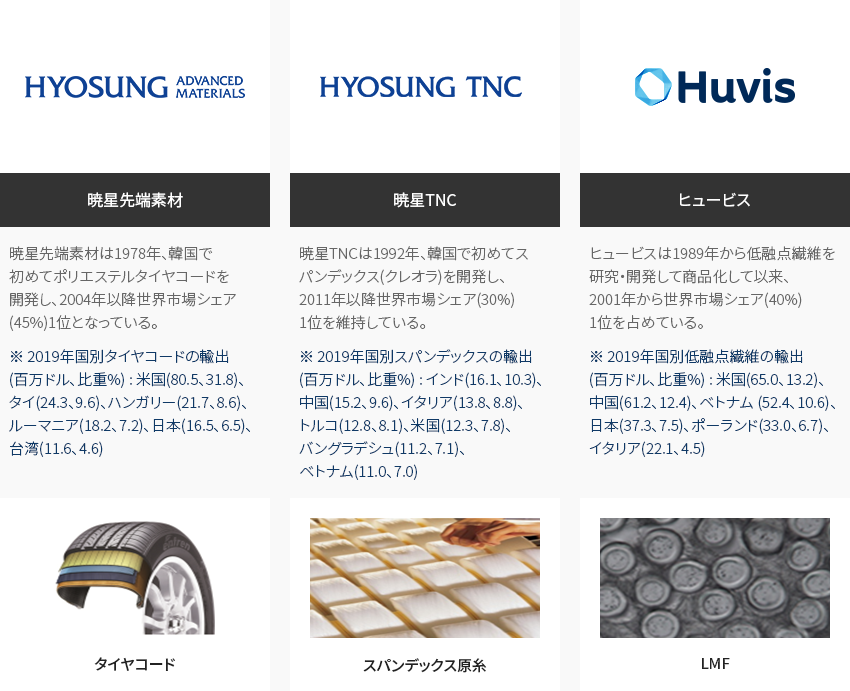
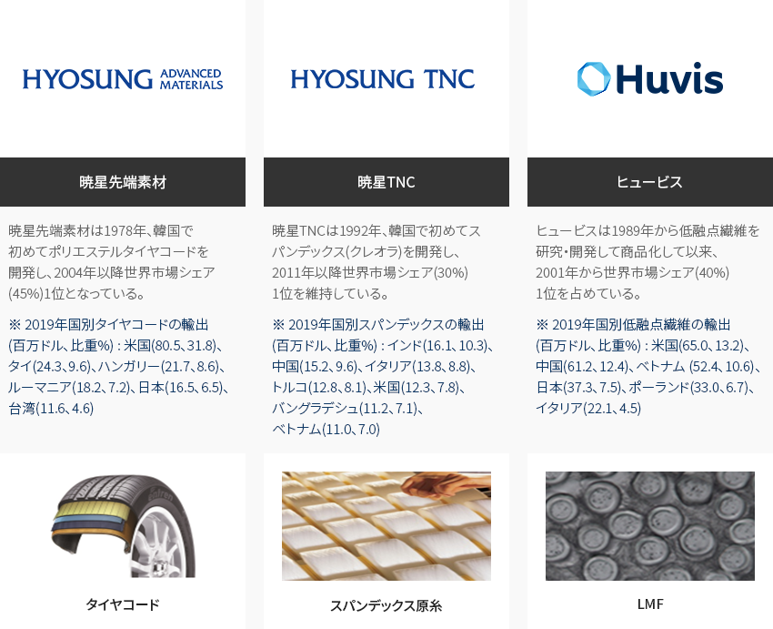
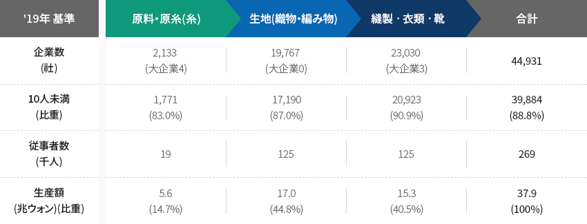
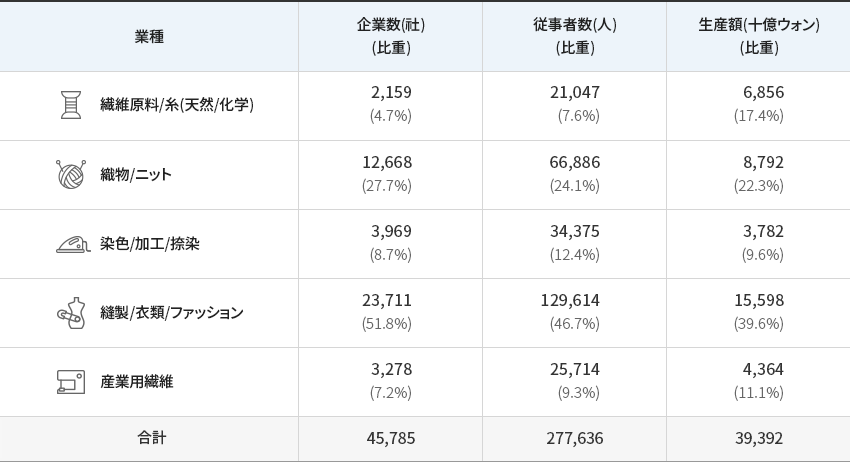
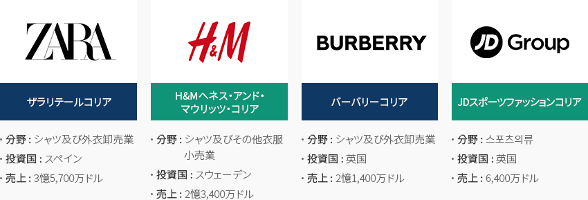
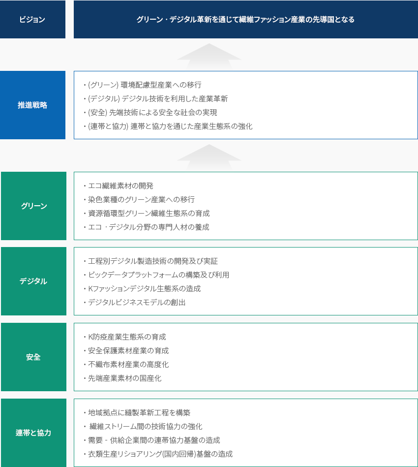
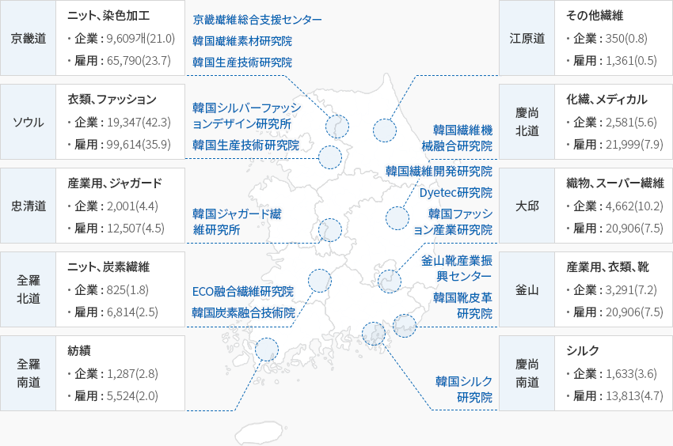

ファッション
- Home
- Why KOREA
- 産業
- ファッション
ファッション
Fashion
-
他の産業との融合 川上・川下産業の連携効果が大きい高付加価値産業 コンテンツを閉じる他の産業との融合 川上・川下産業の連携効果が大きい高付加価値産業韓国の繊維ファッション産業は他の産業及び川上・川下産業の連携効果が非常に大きい産業で、生産誘発係数、
付加価値率が製造業全体 の平均より高く、半導体のような中核産業より雇用誘発係数が高い代表的な高付加価値雇用創出産業である。「繊維産業の波及効果」生産誘発係数- 製造業 - 1.89
- 繊維産業 - 2.01
付加価値率- 製造業 - 35.87
- 繊維産業 - 41.24
 ※ 資料: 統計庁、産業研究院テーマ別の産業現況 (2020.12)「韓国繊維類の世界1位品目」
※ 資料: 統計庁、産業研究院テーマ別の産業現況 (2020.12)「韓国繊維類の世界1位品目」- 暁星先端素材 - (タイヤコード) 暁星先端素材は1978年、韓国で初めてポリエステルタイヤコードを開発し、2004年以降世界市場シェア(45%)1位となっている。 ※ 2019年国別タイヤコードの輸出(百万ドル、比重%) : 米国(80.5、31.8)、タイ(24.3、9.6)、ハンガリー(21.7、8.6)、ルーマニア(18.2、7.2)、日本(16.5、6.5)、台湾(11.6、4.6)
- 暁星TNC - (スパンデックス原糸) 暁星TNCは1992年、韓国で初めてスパンデックス(クレオラ)を開発し、 2011年以降世界市場シェア(30%)1位を維持している。 ※ 2019年国別スパンデックスの輸出(百万ドル、比重%) : インド(16.1、10.3)、中国(15.2、9.6)、イタリア(13.8、8.8)、トルコ(12.8、8.1)、米国(12.3、7.8)、バングラデシュ(11.2、7.1)、ベトナム(11.0、7.0)
- ヒュービス - (LMF) ヒュービスは1989年から低融点繊維を研究・開発して商品化して以来、2001年から世界市場シェア(40%)1位を占めている。 ※ 2019年国別低融点繊維の輸出(百万ドル、比重%) : 米国(65.0、13.2)、中国(61.2、12.4)、ベトナム (52.4、10.6)、日本(37.3、7.5)、ポーランド(33.0、6.7)、イタリア(22.1、4.5)
-
強固な生産基盤を備えた 底力のある国の基幹産業 コンテンツを開く強固な生産基盤を備えた 底力のある国の基幹産業韓国の繊維ファッション産業、繊維産業の企業数は‘19年基準44,931社で製造業の10.2%を占め、
雇用人数は268,918人で6.5%を占めている。関連産業を含む繊維関連産業全体の企業数は288,953社、
雇用人数は804,839人で韓国の代表的な基幹産業の一つである。- 約90％の企業が従業員数10人未満の会社で、大手・中堅企業群は繊維原料の生産・供給を、
中小企業はその原料を調達して生地及び衣類を生産している。
「繊維ファッション産業の一般現況」繊維ファッション産業の一般現況 19年기준 企業数(社), 10人未満(比重), 従事者数(千人), 生産額(兆ウォン)(比重) ‘19年 原料・原糸(糸) 生地(織物・編み物) 縫製ㆍ衣類ㆍ靴 合計 企業数(社) 2,133 (大企業 4) 19,767(大企業 0) 23,030(大企業 3) 44,931 10人未満(比重) 1,771(83.0%) 17, 190(87.0%) 20,923(90.9%) 39,884(88.8%) 従事者数(千人) 19 125 125 269 生産額(兆ウォン)(比重) 5.6(14.7%) 17.0(44.8%) 15.3(40.5%) 37.9(100%)
※ 企業数、従事者数: 統計庁全国事業体調査(1人以上) / 生産額: 統計庁鉱業製造業調査(10人以上)また、これまでの43年間(1977～2019)、3,047億ドルの貿易黒字を記録するなど、韓国の経済発展をけん引してきた基幹産業であり、
他の産業の発展を導いてきた。 単独産業として初めて輸出100億ドルを達成し、‘87年から’01年まで毎年100憶ドル以上の
黒字を記録した。卸売・小売業などの関連産業まで含めれば、従事者が83万人に上る代表的な雇用創出、高付加価値産業の一つで、
繊維ファッション産業の拡大は生産及び投資拡大につながり、新規雇用創出を生み出すことになる。「韓国繊維産業の動向」韓国繊維産業の動向 区分, 年度 ※ 出所 : 韓国貿易協会 - 約90％の企業が従業員数10人未満の会社で、大手・中堅企業群は繊維原料の生産・供給を、
-
韓国の繊維ファッション産業の ストリーム構造 コンテンツを開く韓国の繊維ファッション産業の ストリーム構造繊維ファッション産業はアップストリーム(繊維原料/繊維糸)からミッドストリーム(織物及び染色/加工など)、
ダウンストリーム(衣類、その他繊維製品)に至るまで生産工場が細分化している。生産額基準では縫製/衣類/
ファッション分野が総生産額の約40％を占め、その次は織物/ニット(22.3％)、繊維原料/糸(17.4％)となっている。「韓国の繊維ファッション産業のストリーム構造」(基準 : 2018年)韓国の繊維ファッション産業のストリーム構造 業種, 企業数(社)(比重), 従事者数(人)(比重), 生産額(十億ウォン)(比重) 業種 企業数(社)
(比重)従事者数(人)
(比重)生産額(十億ウォン)
(比重)繊維原料/糸(天然/化学) 2,159
(4.7%)21,047
(7.6%)6,856
(17.4%)織物/ニット 12,668
(27.7%)66,886
(24.1%)8,792
(22.3%)染色/加工/捺染 3,969
(8.7%)34,375
(12.4%)3,782
(9.6%)縫製/衣類/ファッション 23,711
(51.8%)129,614
(46.7%)15,598
(39.6%)産業用繊維 3,278
(7.2%)25,714
(9.3%)4,364
(11.1%)合計 45,785 277,636 39,392
※ 出所 : 統計庁 -
韓国市場に積極的に進出する グローバルファッションブランド コンテンツを開く韓国市場に積極的に進出する グローバルファッションブランド海外のグローバルファッションブランドが韓国及び中国の消費者をターゲットにして韓国市場に進出している。
外国人投資は衣類の製造よりはグローバルファッションブランドの流通部門に集中する傾向があり、
代表的な例としてザラ、H&MなどのグローバルSPAブランドが合弁の形で投資している。(基準 : 2019年)-
ザラリテールコリア
- 分野 : シャツ及び外衣卸売業
- 投資国 : スペイン
- 売上 : 3憶 5,700万ドル
-
H&Mヘネス・アンド・マウリッツ・コリア
- 分野 : シャツ及びその他衣服小売業
- 投資国 : スウェーデン
- 売上 : 2憶 3,400万ドル
-
バーバリーコリア
- 分野 : シャツ及び外衣卸売業
- 投資国 : 英国
- 売上 : 2憶 1,400万ドル
-
JDスポーツファッションコリア
- 分野 : スポーツ衣類
- 投資国 : 英国
- 売上 : 6,400万ドル
※ 出所: 産業通商資源部、金融監督院電子公示システム -
ザラリテールコリア
-
デジタル転換による 産業構造の高度化推進 コンテンツを開くデジタル転換による 産業構造の高度化推進政府は‘20年11月、第34回繊維の日を迎え、先進国との技術格差の拡大や発展途上国からの追撃に直面している状況
(ナッツ・クラッカー現象)の中でGVC(グローバルバリューチェーン)の再編、デジタル転換などの環境の、
変化に積極的に対応して再飛躍のきっかけにするために’25年まで総事業費160兆ウォン(国費114.1兆ウォン)を投資して、190.1万人の雇用創出を目指す「繊維ファッション産業韓国版ニューディール実行戦略」を発表した。「ニューディール実行推進戦略」ビジョン - グリーンㆍデジタル革新を通じて繊維ファッション産業の先導国となる推進戦略- (グリーン) 環境配慮型産業への移行
- (デジタル) デジタル技術を利用した産業革新
- (安全) 先端技術による安全な社会の実現
- (連帯と協力) 連帯と協力を通じた産業生態系の強化
グリーン- エコ繊維素材の開発
- 染色業種のグリーン産業への移行
- 資源循環型グリーン繊維生態系の育成
- エコㆍデジタル分野の専門人材の養成
デジタル- 工程別デジタル製造技術の開発及び実証
- ビックデータプラットフォームの構築及び利用
- Kファッションデジタル生態系の造成
- デジタルビジネスモデルの創出
安全- K防疫産業生態系の育成
- 安全保護素材産業の育成
- 不織布素材産業の高度化
- 先端産業素材の国産化
連帯と協力- 地域拠点に縫製革新工程を構築
- 繊維ストリーム間の技術協力の強化
- 需要‐供給企業間の連帯協力基盤の造成
- 衣類生産リショアリング(国内回帰)基盤の造成
-
地域間、業種間の協業が 容易な生産ネットワーク コンテンツを開く地域間、業種間の協業が 容易な生産ネットワーク繊維ファッション産業は各地域の産地別に特化された繊維ストリームを構築しており、産・学・研クラスターの活性化や地域別特化品目の
育成を通じた地域経済の活性化はもちろん、ストリーム間の地域間共存協力による構造の高度化を図ることができる。- ソウル・京畿 : スマートファクトリーの構築を通じたデジタル転換及びIT融合繊維・編み物(ニット)・染色加工分野
- 大邱・慶尚北道 : 先端産業用繊維の育成、未来市場に対応するためのICT連携及び環境配慮型産業
- 釜山・慶尚南道 : 海洋融合複合素材の高付加価値化、縫製‐ICT融合の危機対応型特殊ワークウエア(防疫物品・軍服)
- 忠清・全羅道 : IT融合の製造革新による生産性の向上、安全保護製品などの技術融合産業用繊維の開発促進
「地域別特化生産繊維製品と繊維ファッション産業関連の企業及び従事者数」(基準 : 2019年)-
京畿道: ニット、染色加工(京畿繊維総合支援センター, 韓国繊維素材研究院, 韓国生産技術研究院)
- 企業: 9,680(21.0)
- 雇用: 65,790(23.7)
-
江原道: その他繊維
- 企業: 350(0.8)
- 雇用: 1,361(0.5)
-
ソウル: 衣類、ファッション(韓国シルバーファッションデザイン研究所, 韓国生産技術研究院)
- 企業: 19,347(42.3)
- 雇用: 99,614(35.9)
-
慶尚北道: 化繊、メディカル(韓国繊維機械融合研究院)
- 企業: 2,581(5.6)
- 雇用: 21,999(7.9)
-
忠清道: 産業用、ジャガード(韓国ジャガード繊維研究所)
- 企業: 2,001(4.4)
- 雇用 : 12,507(4.5)
-
大邱: 織物、スーパー繊維(韓国繊維開発研究院, Dyetec研究院, 韓国ファッション産業研究院)
- 企業: 4,662(10.2)
- 雇用: 20,906(7.5)
-
全羅北道: ニット、炭素繊維(ECO融合繊維研究院, 韓国炭素融合技術院)
- 企業: 825(1.8)
- 雇用: 6,814(2.5)
-
釜山: 産業用、衣類、靴(釜山靴産業振興センター, 韓国靴皮革研究院)
- 企業: 3,291(7.2)
- 雇用: 20,906(7.5)
-
全羅南道: 紡績
- 企業: 1,287(2.8)
- 雇用: 6,814(2.5)
-
慶尚南道: シルク(韓国シルク研究院)
- 企業: 1,633(3.6)
- 雇用: 12,813(4.7)
※ 出所：統計庁「国家統計ポータル」全国事業体調査(１人以上企業の調査資料)
※ ※ 注：特化生産繊維、企業(企業数)、雇用(従事者数)算出。( )は割合を示す。
※ 資料協力：韓国繊維産業連合会


Invest KOREA
食品 / ファッション / ビューティーPM
チョン·ボヨン
基幹産業誘致チーム
T.+82-2-3460-7888
おすすめの立地情報
産業団地情報
[Daegu Metropolitan City Seo-gu] Daegu Dyeing General Industrial Complex
(Regeneration Business District)
Click [Go to Detailed Information] to go to the relevant information screen of
Smart K-Factory service of Industrial Complex Corporation.
-
Complex nameDaegu Dyeing General Industrial Complex (Regeneration Business District)
-
Initial designation date1980.11.28
-
Designated area(m2)849,648
-
ManagementDaegu Dyeing Industrial Corporation
-
Nearby RailwaySeodaegu Station
-
Distance from station(km)2
-
Nearby AirportDaegu International Airport
-
Distance from airport(km)10
-
Industrial water Supply capacity(ton/day)120(㎥/day)
-
Affiliation local governmentDaegu Metropolitan City Seo-gu
-
Population2,428,228
産業団地情報
[Gyeongsangbuk-do Yeongju City] Ban-gu Specialized Agricultural Industrial
Complex
Click [Go to Detailed Information] to go to the relevant information screen of
Smart K-Factory service of Industrial Complex Corporation.
-
Complex nameBan-gu Specialized Agricultural Industrial Complex
-
Initial designation date2010.08.03
-
Designated area(m2)299,354
-
ManagementGyeongsangbuk-do Yeongju City
-
Nearby RailwayYeongju Station
-
Distance from station(km)9
-
Nearby AirportWonju Airport
-
Distance from airport(km)115
-
Industrial water Supply capacity(ton/day)10(㎥/day)
-
Affiliation local governmentGyeongsangbuk-do Yeongju City
-
Population103,652
産業団地情報
[Gyeongsangbuk-do Gyeongsan City] Gyeongsan 1st General Industrial
Complex
Click [Go to Detailed Information] to go to the relevant information screen of
Smart K-Factory service of Industrial Complex Corporation.
-
Complex nameGyeongsan 1st General Industrial Complex
-
Initial designation date1990.12.10
-
Designated area(m2)1,577,414
-
ManagementGyeongsan Industrial Complex Corportation
-
Nearby RailwayGyeongsan Station
-
Distance from station(km)15
-
Nearby AirportDaegu International Airport
-
Distance from airport(km)24
-
Industrial water Supply capacity(ton/day)7000(㎥/day)
-
Affiliation local governmentGyeongsangbuk-do Gyeongsan City
-
Population262,300
産業団地情報
[Gyeonggi-do Yangju City] Hongjuk General Industrial Complex
Click [Go to Detailed Information] to go to the relevant information screen of
Smart K-Factory service of Industrial Complex Corporation.
-
Complex nameHongjuk General Industrial Complex
-
Initial designation date2008.03.25
-
Designated area(m2)585,700
-
ManagementKorea Industrial Complex Corporation
-
Nearby RailwayDongducheon Station
-
Distance from station(km)21
-
Nearby AirportGimpo International Airport
-
Distance from airport(km)43
-
Industrial water Supply capacity(ton/day)3137(㎥/day)
-
Affiliation local governmentGyeonggi-do Yangju City
-
Population229,052
産業団地情報
[Daegu Metropolitan City Seo-gu] Seodaegu Industrial Complex (Renewable
Zone)
Click [Go to Detailed Information] to go to the relevant information screen of
Smart K-Factory service of Industrial Complex Corporation.
-
Complex nameSeodaegu Industrial Complex (Renewable Zone)
-
Initial designation date2013.12.30
-
Designated area(m2)2,661,821
-
ManagementSeodaegu Industrial Complex Association
-
Nearby RailwaySeodaegu Station
-
Distance from station(km)3
-
Nearby AirportDaegu International Airport
-
Distance from airport(km)20
-
Industrial water Supply capacity(ton/day)18807(㎥/day)
-
Affiliation local governmentDaegu Metropolitan City Seo-gu
-
Population2,428,228
産業団地情報
[Gyeonggi-do Dongducheon City] Sangbong-am General Industrial
Complex
Click [Go to Detailed Information] to go to the relevant information screen of
Smart K-Factory service of Industrial Complex Corporation.
-
Complex nameSangbong-am General Industrial Complex
-
Initial designation date1995.02.14
-
Designated area(m2)54,522
-
ManagementGyeonggi-do Dongducheon City
-
Nearby RailwayDongducheon Station
-
Distance from station(km)2
-
Nearby AirportGimpo International Airport
-
Distance from airport(km)76
-
Industrial water Supply capacity(ton/day)100(㎥/day)
-
Affiliation local governmentGyeonggi-do Dongducheon City
-
Population93,968